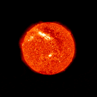

The Solar System
The Sun
The Sun's gravity holds the solar system together, keeping everything – from the biggest planets to the smallest particles of debris – in its orbit. The connection and interactions between the Sun and Earth drive the seasons, ocean currents, weather, climate, radiation belts and auroras. Though it is special to us, there are billions of stars like our Sun scattered across the Milky Way galaxy.The Sun has many names in many cultures. The Latin word for Sun is “sol,” which is the main adjective for all things Sun-related: solar. The Sun has inspired us since ancient times. It’s central to mythology and religion in cultures around the world, including the ancient Egyptians, the Aztecs of Mexico, Native American tribes of North and South America, the Chinese, and many others.Countless musicians have written songs about the Sun. The Beatles had a hit in 1969 with “Here Comes the Sun.” Other popular songs that reference the Sun include: “Walkin’ on the Sun” by Smashmouth; “Ain’t No Sunshine” by Bill Withers; “Walking on Sunshine” by Katrina and the Waves; “Pocketful of Sunshine” by Natasha Bedingfield; and “Let the Sunshine In” by the Fifth Dimension.If you're Superman or a fellow Kryptonian of comic book fame, your powers are heightened by the yellow glow of our Sun. There are several science fiction films featuring the Sun in the storyline.

NASA
Wikipedia